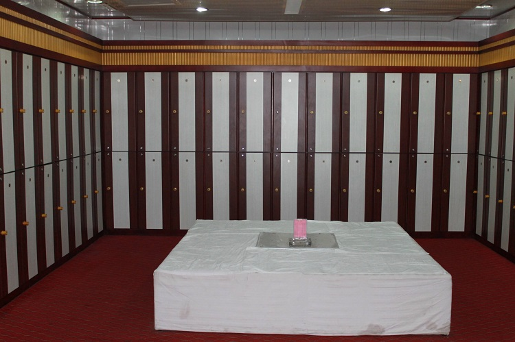
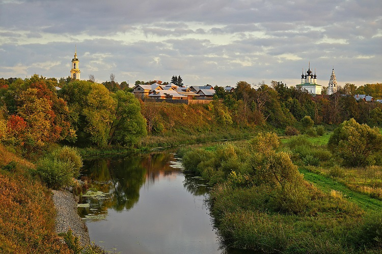

#俄式桑拿#
俄式桑拿是最原始的桑拿，与香薰、精油和放松的音乐无关，因为俄式桑拿只有新鲜的白桦枝和天然焦油的味道。在俄罗斯洗桑拿浴，当地人一般都要带一束桑拿时互相抽打的植物枝叶，当被蒸烤的大汗淋漓后，找个帮手或自己用枝叶抽打全身，直到遍体通红为止。
有的还马上用冷水淋浴，身体强壮者，要反复几次才算过瘾。据说这样可以按摩身体、加速血液循环，防治多种疾病。

图：桑拿
#采摘野生浆果#
对俄罗斯人来说，每年采集浆果和蓝莓的日子，可不只是满手黏糊糊地在外玩耍：在漫长而寒冷的冬季，风干的果脯、水果羹、马林果酒……可都是大餐后最甜蜜的收尾。
莫斯科郊外，可以走入蓊郁的森林中，穿过昏暗的森林地表，拨开小灌木，你会看到簇簇鲜艳夺目的红色越橘、鲜嫩诱人的马林果（树莓、覆盆子）、深幽静谧的蓝莓在草丛间喷涌而出。当然，还有石生悬钩子、黑莓、云莓、醋栗……

图：莫斯科郊外
#游红场追忆逝去的岁月#
莫斯科红场对于熟知俄历史的人来说，是一种对沧桑岁月的怀恋，一种对流逝青春的祭念。电影《列宁在1918》里面的克里姆林宫与红场，是很多人少年时代通向外面世界的窗口。
红场的地面皆由古朴的条石铺嵌而成，似乎有些凸凹不平，但尤适合于怀古。最好，一个人静静地、久久地站在这里，让思绪飞跃时空，回归久远的过去。朦胧间，耳畔隐约响起五百年前皇城外的这片曾经的集市的嘈杂与喧闹。而倏忽间，是的，只需倏忽一刻，又如梦中醒来，眼前只是一片空旷的广场和古老地面上长长的影子。

图：红场
#登麻雀山望莫斯科全景#
莫斯科大学主楼位于麻雀山上，麻雀山是莫斯科海拔最高处，从麻雀山上的观景台能俯瞰全城。麻雀山上雷雨消失得无影无踪，七色彩虹像拱桥般横亘在整个莫斯科上空。
它的一端落入莫斯科河，仿佛在吮吸河水。在高处，在山冈上，可以眺望河对岸的城市和闪耀在千万扇朝西的窗户上的破碎的太阳，眺望着女修道院中的一座座美丽的小塔”，“ 对岸无数个火红的太阳正在把窗玻璃烧化，而在这些太阳的上空则笼罩着一层云雾、黑烟和水汽—那是一天中被晒得滚烫的城市散发出来的。”